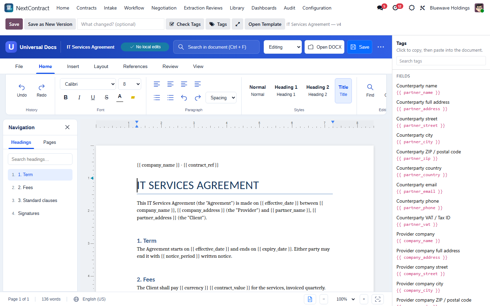
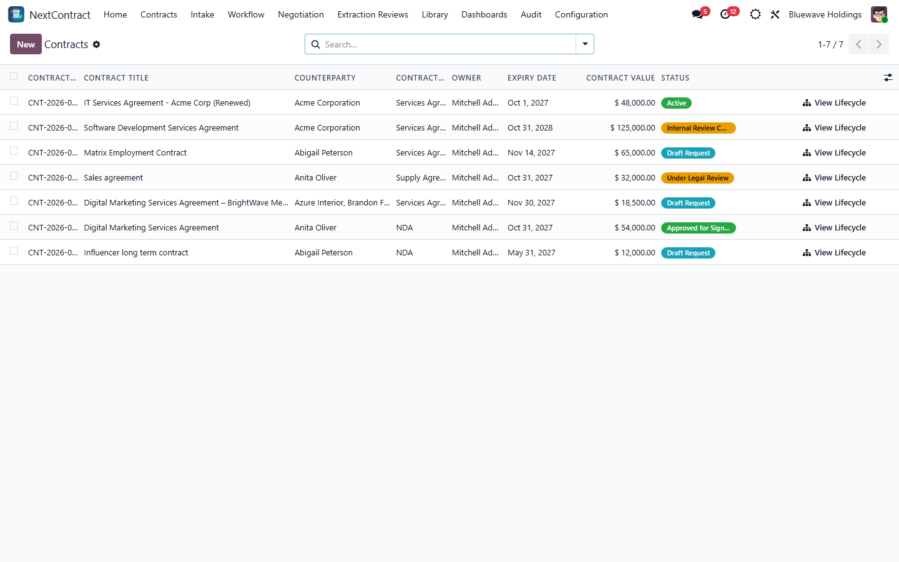
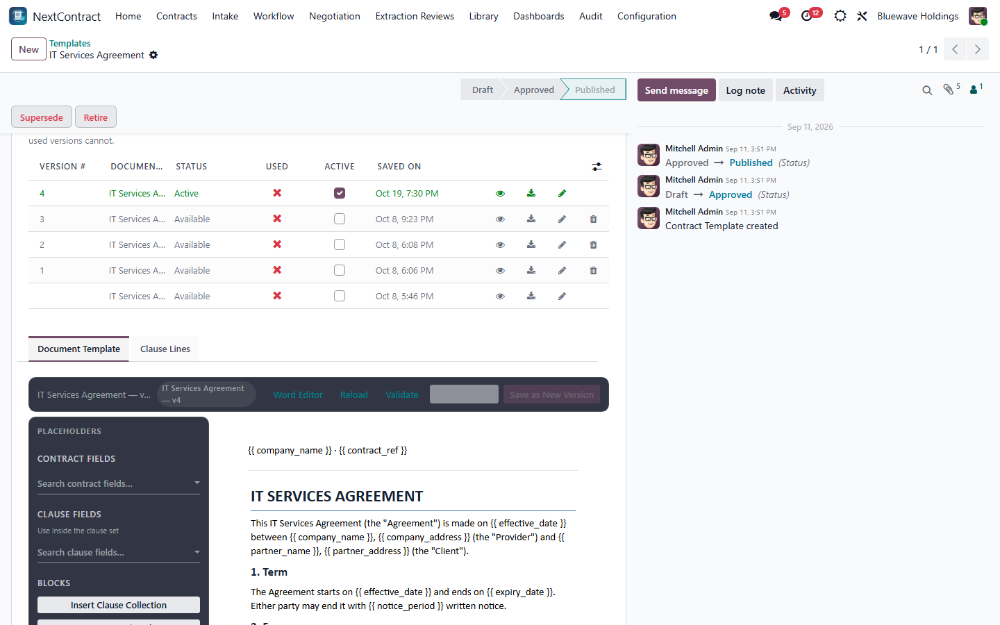
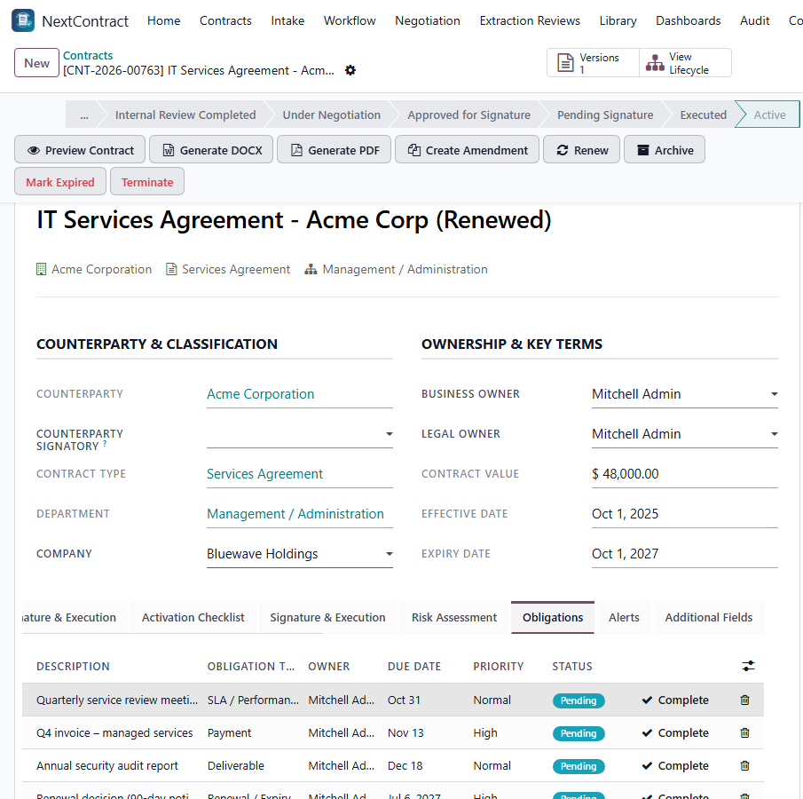
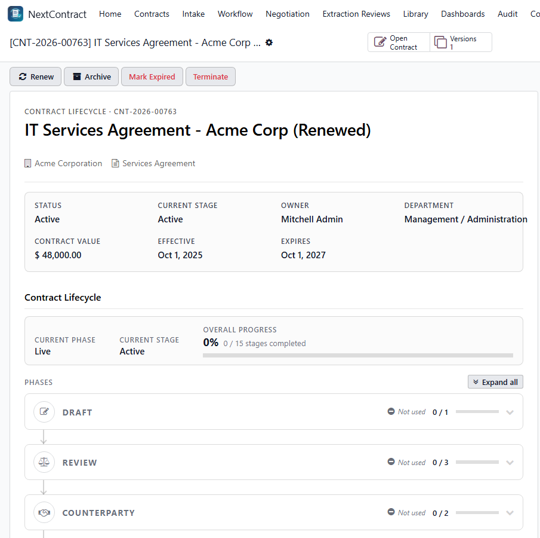

Contract lifecycle management for Odoo 19 Enterprise, from the first request to renewal, with a built-in Word editor for your contract templates.
Open a template's Document Template in a full Word editor without leaving Odoo. Copy placeholders from the Tags panel, check them before saving, and keep every change as a template version. The original file is never overwritten.

Counterparty, type, department, owners, value and key dates, with a status that follows the contract from draft request through review, negotiation, signature and activation.

Build contracts from approved templates and clause sets. Each template keeps its Word Document Template versions, and only one is active for new contracts.

Generate DOCX and PDF, send for signature with Odoo Sign, then manage the live contract: amendments, renewal, termination and archiving. Signed versions are locked.

The lifecycle overview shows every phase and stage of a contract and how far it has progressed.

clm/requirements.txt (pip install -r clm/requirements.txt). On Odoo.sh, put them in the requirements.txt at the root of your repository.apt-get install libreoffice-writer-noguipip install -r requirements.txt and install LibreOffice.Behind a reverse proxy, serve .wasm files as application/wasm, allow
same-origin framing (X-Frame-Options: SAMEORIGIN) and, if you set a Content-Security-Policy,
allow 'wasm-unsafe-eval'. Use HTTPS. The Tags panel's copy button needs it.
Back up your database and filestore, replace the module folders, then upgrade with
-u clm (or Apps, then Upgrade on NextContract). Refresh the browser
once afterwards. If the older Universal Docs module is still installed, uninstall it after
this upgrade, never before.
Your contracts stay in your Odoo database. AI features are optional and use Google Gemini with your own API key. Contract text and files are sent to Google only after an administrator enters the key and gives cloud-processing consent in Settings. Consent can be revoked there.
The Word editor runs in the browser and saves to your Odoo server. Common fonts are bundled. Choosing a font that is not bundled may load it from Google Fonts, which receives the font name, not document content.
Contact us from your Odoo Apps order page.